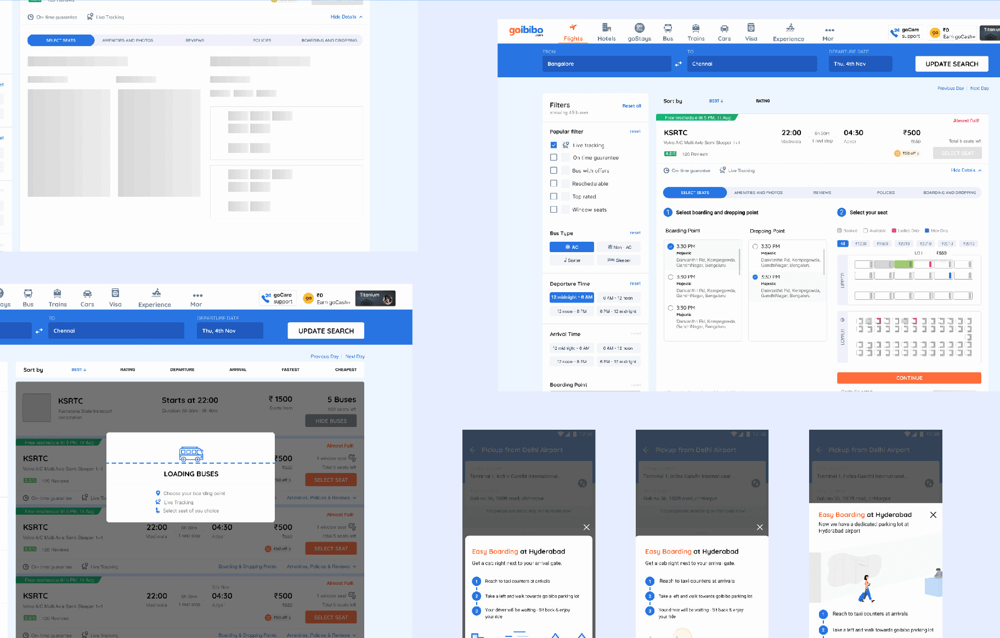

(02)
Paytm Insider
COVID wiped out live events. As lead designer on the pivot, I helped reach 50,000+ paying users in month one.
Design Systems0→1A/B TestingResearchUX Design
Open
The Design System Behind $500M+ In Enterprise Deals
Not everyone likes to read too much nowadays (thanks TikTok). See a comic strip?

I joined the pre-sales team, the group that builds demos and experiences for client proposals. The work was good. It just never added up.
Every demo was built in a silo, shaped so tightly around one client that reusing it meant starting over. Nothing looked the same from one proposal to the next, and designers kept rebuilding patterns someone had already made.
One source of truth that could work as a product line and still fit any client or proposal.
I spent six months on research before the system took shape. I wanted to know where demo work hurt, what we could take from systems that already existed, and what the brand should feel like.
I interviewed 50+ designers about where demo work hurt, covering about 10 years of their work.
I reviewed existing design systems to decide what we could plug in, what we could modify, and what we had to build ourselves.
I worked with marketing on the company's brand vision, so the system would be on-brand from its first release.
The interviews kept landing in the same three places. Every pitch started from scratch. Demos were so tied to one client that reusing one meant rebuilding it. And no two demos looked like they came from the same company.
Different clients, same patterns, rebuilt from scratch every time. The answer was one source of truth.
I built an MVP, then spent six months building it out and several more months in feedback sessions with designers. The cost was time: months of system work on a team that sells every week. I made that call because faster one-off demos would only have made more of the problem.
The first version was the documentation every designer built from. It starts with the brand philosophy, then goes deep on each component with usage guides and the reasoning behind every decision. It also sets direction on fonts, colors, illustration, data visualization and content.
Behind it sits a central repository, kept up to date with design standards for Android, iOS, web and accessibility. Each Voyage product went on to serve 10+ clients.
Demos stopped being one-offs. Every pitch used the same parts, and only the client's look changed.
Voyage is the parent system. Teams build child systems that add or change components for their own work, and weekly feedback sessions merge the useful changes back into Voyage. That kept teams inside the system instead of working around it.
Sales kept asking for demos in the client's own look. So I added fast switching between versions and themes: white-label by default, styled per client when a deal needs it. What used to be a rebuild became a toggle.
Try the toggle: one screen, four token sets. It uses the same password as the output below.
Over the following year, the company started showing products under its own name, built on Voyage.
Every demo became reusable across proposals. Design turnaround dropped 30%, and the output finally looked consistent. Five or more teams adopted it.
With AI, designers started building outside Figma, in Claude Code, Copilot, Claude Design and other tools. The system had to follow them there.
Every component and every group of components got a contract: what it is for and the rules it follows.
Context docs explain how to use each component. A context markdown file explains why it exists, so an agent can reason about it.
Every component was translated into a stack-agnostic developer version, so any AI tool can build experiences that match.
It helped, but AI output still drifted away from the system. Documentation alone was not enough.
The next version added a plugin and process contracts for every AI tool. AI builds only from existing components and writes anything it can't map into gaps.md. The screen always gets built, with the gaps marked. A designer decides which gaps are real. Only those get built, after agents check the related parent and child components. A Voyage admin approves anything joining the system, and Chromatic checks every component for accessibility, visuals and code. At each step the AI offers three options.
Screens built with Voyage across products. One of them was made with the AI flow above.
Proposals in a month
Designers now build experiences with AI without the drift, and the system keeps itself maintained through the same flow. Clients this touched include Wells Fargo, JPMorgan Chase, Morgan Stanley, Charles Schwab, BlackRock, Corebridge and FedEx.
Level 2 had contracts and context files, and AI still drifted. What worked was making reuse the only path and putting every gap in front of a person.
Child systems and weekly merges let teams change Voyage for their own work without leaving it.
COVID wiped out live events. As lead designer on the pivot, I helped reach 50,000+ paying users in month one.

Users were leaving for Google Pay's chat. I designed pay-first chat for 100M+ users: drop-off fell from 34% to 12%.

Bus bookings dropped at checkout. I redesigned the flow: 72% faster checkout, 34% lower drop-off.